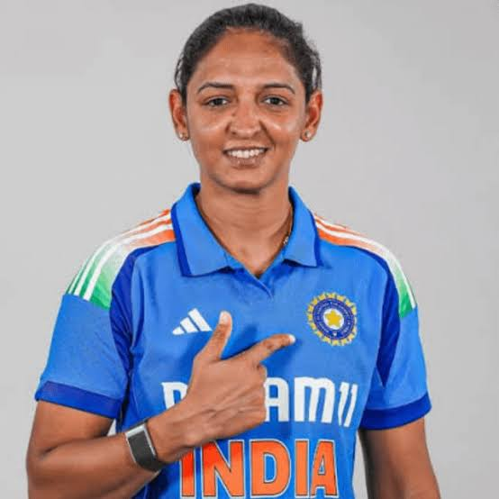

My favourite Cricketers
Harmanpreet Kaur

Harmanpreet Kaur Bhullar (born 8 March 1989) is an Indian cricketer who plays as an all-rounder and a former captain of the India women's national team. She is a top order batter and a right-arm off-spin bowler. She captained the Indian team that won the 2025 Women's Cricket World Cup, the Women's Asia Cup in 2012,[a] 2016 and 2022, and the gold medal in the 2022 Asian Games. Under her captaincy, the Indian women's team achieved its first bilateral Women's One Day International (WODI) away series win against England since 1999 in 2022, the first-ever Test victory over Australia in 2023, and the first Women's Twenty20 International (WT20I) series win against England in 2025. She was also a member of the Indian team that won the silver medal in the 2022 Commonwealth Games.
Harmanpreet has scored more than 8,000 runs in international cricket. In 2018, she became the first Indian to score a century in a WT20I match. In 2019, during the home series against South Africa, she became the first Indian cricketer to play in 100 T20 International matches. In 2023, she became the first Indian to score more than 3,000 runs in WT20Is. As of 2025, she is one of the only three Indian women to score more than 3,000 runs in WODIs. She also holds the record for the most runs scored in World Cup knockout matches (331 runs).
Harmanpreet captains Mumbai Indians in the Women's Premier League (WPL), and led the team to WPL titles in 2023 and 2025. In 2016, she became the first Indian woman to be signed by an overseas T20 franchise after joining Sydney Thunder in the Australian Women's Big Bash League (WBBL). She led the Supernovas in the Indian Women's T20 Challenge to titles in 2018, 2019, and 2022. She has played for Melbourne Renegades in the WBBL, Manchester Originals and Trent Rockets in The Hundred.
Harmanpreet was awarded the Arjuna Award by the Government of India in 2017. In 2023, she was named as one of the five Cricketers of the Year by Wisden, and was the first Indian woman to be featured in the list. She also featured in the 100 Next list by Time, and 100 Women list by BBC in the same year. She was awarded the Padma Shri award, the fourth highest civilian honour, by the Government of India in 2026.
Travis Head
.jpg)
Travis Michael Head (born 29 December 1993) is an Australian international cricketer who represents the Australia national cricket team in all formats and is the current Test vice-captain.[2] Known for his high strike rate, Head is a left-handed batter and part-time right arm off-spin bowler. He is contracted to South Australia at the state level and the Adelaide Strikers for the Big Bash League. Head has served as both a co vice-captain and vice-captain in Tests in multiple stints. Head captained Australia in T20Is and served as vice-captain in ODIs in 2024.
Head was a key member of the Australian team that won the 2023 World Test Championship final and 2023 Cricket World Cup final, having been adjudged Player of the Match in both those finals. He also became the second player ever to score a century when batting second in a World Cup final.[6] He also became the first player to score centuries in two consecutive ICC tournament finals in a same calendar year.
Why do I like these two player?
It is because Harman is so hardcore and Travis head used to play backyard cricket just like i do now that is why! Also Harman is the coolest.